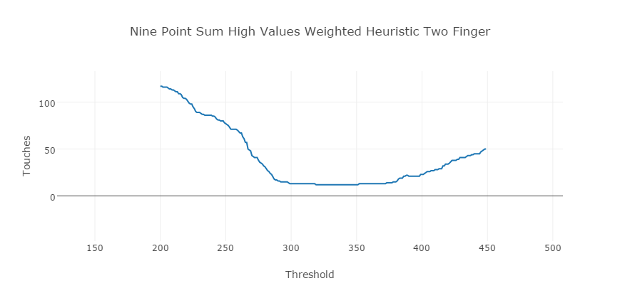
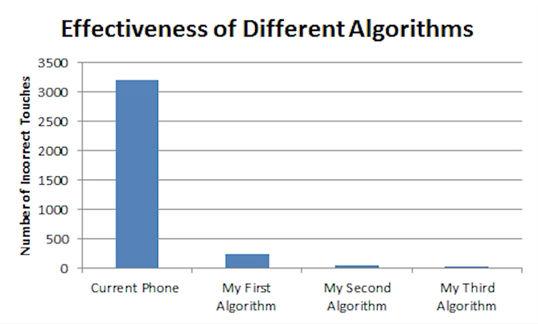

The first step in implementing water rejection was the creation of two kernel proc files from the touch_synaptics_ds5.c kernel module. One of these files contained the raw capacitance data, and the other contained the phone's default touch point data. Using a python file, I was able to visualize the capacitance data and gain an annecdotal understanding of how water effects the touchscreen.
I then created a battery of python scripts to record data coming from the proc files. With the aid of these tools I was able to record about 10 minutes and 10,000 frames of touch data, which each contained the capacitance matrix and the phone's touch points. More about these specific files is outlined in the Tools section.
I created a tool in python to test the results of different tests. In each frame, the number of real touches and the number of reported touches were known, so I could analyze the accuracy of each touch filtering algorithm by looking at the difference between the reported and actual touches. The algorithms each had different parameters, which were optimized automatically by my script. Here is a graph of my best algorithm and its optimizations.

The best of my ten algorithms identified only 12 points incorrectly as touches. The default algorithm identified 3199 points incorrectly as touches. This work out to be over a 34% error rate, while the error rate of my algorithm was just .1%.
Below is a graph of the default touch detection compared with three of my best algorithms:

The algorithm will be refined further, and tested on a far larger data set gathered from many users. The algorithm processing will be completed in the phone's kernel, not in a python program on an external computer, for speed and ease of use. My program in the kernel would modify the system's /proc files, which would allow the entire system, not just one app, to use RainCheck's functionality.